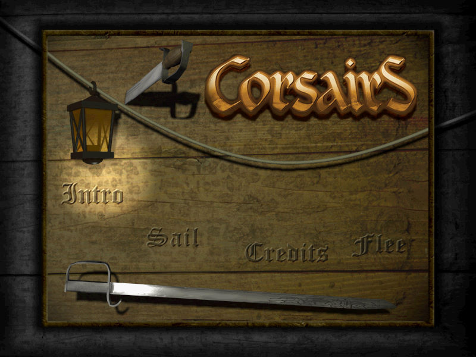
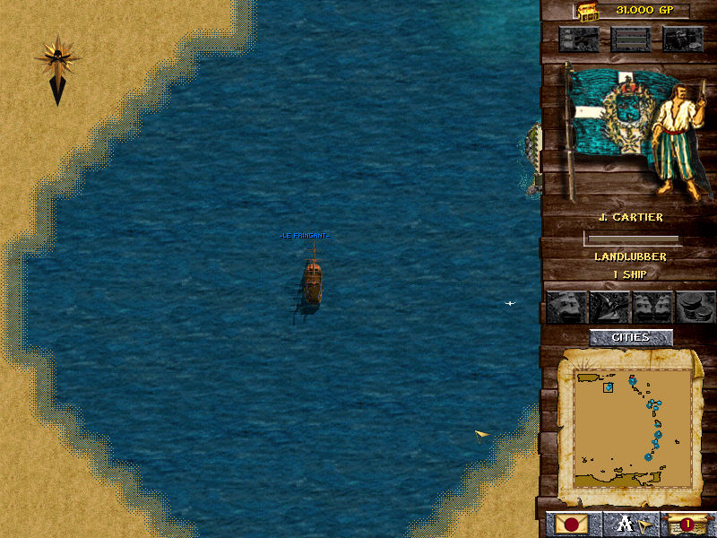

名稱：海盜 (Corsairs: Conquest at Sea，英文版)
簡介：Microids 1999年出品的冒險遊戲，同年再推出「新征服者（The New Conquerors）」
擴展包，2000年則推出整合二者的「黃金版（Gold）」 [待補]。


保護：光碟
備註：XP以上系統安裝時，要設定SETUP.EXE為Win9x相容。
限制：由於相容性問題，目前只能在Win9x系統上執行。
檔案：setup_corsairs_gold_2.1.0.7.rar = 海盜GOG黃金版2.1.0.7版安裝檔（尚未測試）